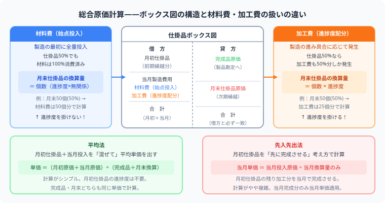
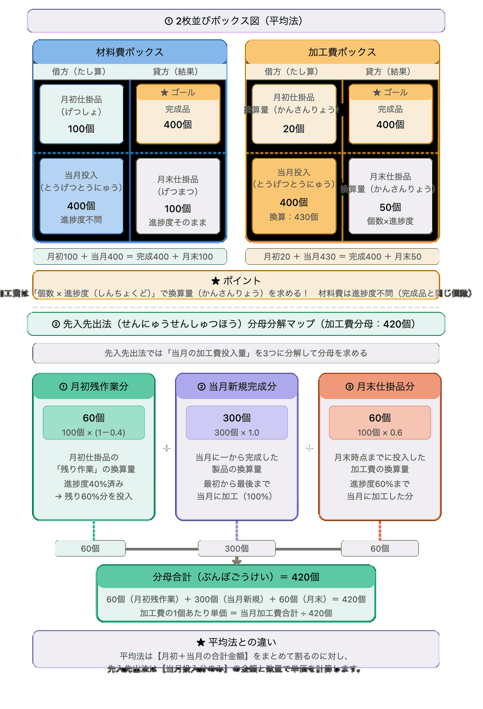

【簿記2級】総合原価計算を完全解説
ボックス図・平均法・先入先出法を例題つきで攻略
こんにちは、大谷です！
正直に告白すると、総合原価計算を初めて勉強したとき、僕は「材料費と加工費、なんで計算方法が違うの…？」と全く腑に落ちないまま、ボックス図を1枚にまとめて計算して盛大に爆死しました（笑）。おまけに「完成品換算量」という謎ワードが出てきた瞬間、「うわっ、なんじゃこりゃ……日本語のはずなのに1ミリも意味がわからん！」と本気で固まったのを今でも覚えています。
でも実は、材料費と加工費の違いは「電気代（加工費）は使った分だけ発生するけど、材料は最初にドバッと全部投入する」というたった1つの前提を知っていれば一瞬で腑に落ちる話でした。この記事では、当時の僕がつまずいたポイントを全部つぶしながら、ボックス図を2枚に分けて解く"型"を一緒に叩き込んでいきます！
また、毎日のブログ執筆やアプリ開発のモチベーション維持のために、記事の末尾のほうにある「いいねボタン」をポチッと押してもらえると、めちゃくちゃ励みになりますしすごく嬉しいです！それでは、一緒に攻略していきましょう！
- ボックス図を2つ書く——「材料費用」と「加工費用」は必ず別々のボックス図で計算する
- 材料費は進捗度なし・加工費は進捗度あり——月末仕掛品の換算量の求め方が違う
- 平均法＝月初も混ぜて割る、先入先出法＝当月分だけで割る——分母の作り方が鍵
- 答えの検算——完成品原価＋月末仕掛品原価＝総投入原価（ズレたら必ずどこかが間違い）
総合原価計算は「同じ製品を大量に作るとき、1か月分の費用を完成品と作りかけ（月末仕掛品）に分ける計算」です。試験で確実に点を取るには、ボックス図（T字勘定）を使った手順を体に覚え込ませることが最重要です。この記事では材料費と加工費を分けた正しい解法を例題つきで完全解説します。
🏭 個別原価計算との違い——総合原価計算はどんな製品に使う？

総合原価計算の核心は「材料費と加工費で月末仕掛品の換算量の計算が違う」点です。材料費は始点で全量投入なので進捗度を掛けず、加工費は進捗度を掛けた換算量で計算します。
| 項目 | 個別原価計算 | 総合原価計算 |
|---|---|---|
| 生産形態 | 受注生産（注文を受けてから作る） | 大量生産（同じ製品を継続して作る） |
| 原価の集め方 | 製造指図書（注文）ごと | 1か月などの期間でまとめる |
| 主な問い | 注文Aにいくらかかったか？ | 完成品と月末仕掛品に原価をどう分けるか？ |
| 代表的な業種 | 建設業・造船・特注機械 | 食品・化学品・日用品製造 |
⚠️ 最重要：材料費と加工費を「必ず分けて」計算する
総合原価計算で最も犯しがちなミスは、材料費と加工費を一緒にして計算してしまうことです。この2つは月末仕掛品への配分ロジックが根本的に違います。
材料は製造の最初（始点）に全量投入するため、作りかけでも材料は100%消費済み。
月末仕掛品の数量＝そのままの個数
電気代や人件費（加工費）は製造が進むにつれて徐々に発生するため、50%しか進んでいない製品は50%分しか消費していない。
月末仕掛品の換算量＝個数×加工進捗度
材料費の分母：200個（そのまま）
加工費の分母：200×50%＝100個換算
この2つの数字を必ず別々のボックス図で管理することで、ミスがなくなります。
📦 ボックス図の書き方——試験会場で最初に書く「下書き」

2枚のボックス図は「材料費用」と「加工費用」のパズルです。どちらも左の合計（借方）＝ 右の合計（貸方）が必ず一致します——この法則がすべての計算の土台です。
材料は製造の最初に全部投入。作りかけでも材料はすでに100%消費済みなので、月末仕掛品もそのままの個数を使います。
電気代・人件費は工程が進むほど発生。50%しか進んでいなければ50%分しか使っていないので、月末仕掛品は個数×進捗度の換算量に変換します。
ボックス図は仕掛品勘定のT字形式です。材料費用・加工費用の2枚を横に並べて書くのが正しい使い方です。
【左側（借方）】 月初仕掛品 ＋ 当月投入 = 合計
【右側（貸方）】 完成品 ＋ 月末仕掛品 = 合計（左と一致）
→ 右側の「完成品」か「月末仕掛品」のどちらかが問われ、逆算で求める
📐 ① 基本パターン——月初仕掛品なし（ここを先に完璧にする）
- 完成品数量：400個
- 月末仕掛品：200個（加工進捗度 50%）
- 当月投入 直接材料費：120,000円（始点投入）
- 当月投入 加工費：150,000円
材料費用の月末：200個（進捗度を掛けない）
加工費用の月末換算：200個 × 50% ＝ 100個換算
材料費単価：120,000 ÷ 600個 ＝ 200円/個
加工費単価：150,000 ÷ 500個換算 ＝ 300円/換算個
完成品総合原価 ＝ 80,000（材料）＋ 120,000（加工）＝ 200,000円
月末仕掛品原価 ＝ 40,000（材料）＋ 30,000（加工）＝ 70,000円
検算：200,000 ＋ 70,000 ＝ 270,000 ＝ 120,000 ＋ 150,000 ✓
🔁 ② 平均法（月初仕掛品あり）——月初と当月を「混ぜて割る」
平均法は、月初仕掛品の原価と当月投入原価を合計してから完成品換算量合計で割る方法です。「全期間の平均コストで完成品と月末を評価する」考え方です。
- 月初仕掛品：100個（加工進捗度 20%） / 材料費 20,000円・加工費 9,000円
- 完成品数量：400個
- 月末仕掛品：100個（加工進捗度 50%）
- 当月投入 直接材料費：80,000円 加工費：126,000円
月末仕掛品材料：100個（進捗度不問）
分母 ＝ 400（完成）＋ 100（月末）＝ 500個
月末換算：100 × 50% ＝ 50個換算
分母 ＝ 400（完成）＋ 50（月末換算）＝ 450個換算
材料費単価：(20,000 ＋ 80,000) ÷ 500個 ＝ 200円/個
加工費単価：(9,000 ＋ 126,000) ÷ 450換算 ＝ 300円/換算個
図解①の加工費ボックス左欄に「当月換算 430個」があります。問題文には直接書かれていませんが、左右一致の法則から逆算できます。
∴ 当月換算 ＝ 450 − 20 ＝ 430個換算
「問題文に載っていない数字」でも、左右一致の法則から逆算できます。また平均法の分母は 450換算（右合計）ですが、当月投入量は 430換算——この違いを図解で確認してください。
完成品 ＝ 80,000 ＋ 120,000 ＝ 200,000円
月末仕掛品 ＝ 20,000 ＋ 15,000 ＝ 35,000円
検算：200,000 ＋ 35,000 ＝ 235,000 ＝ (20,000＋9,000) ＋ (80,000＋126,000) ✓
平均法は「合計金額を合計数量で割る」計算です。
分母 ＝ 完成品数量 ＋ 月末仕掛品（換算量）——月初仕掛品数量は含めません。
🔀 ③ 先入先出法（月初仕掛品あり）——当月分だけで割る
先入先出法は「月初仕掛品の原価はそのまま完成品に渡し、当月の投入分だけで新たに単価を計算する」方法です。
- 月初仕掛品：100個（加工進捗度 40%） / 材料費 20,000円・加工費 15,000円
- 完成品数量：400個
- 月末仕掛品：100個（加工進捗度 60%）
- 当月投入 直接材料費：80,000円 加工費：105,000円
材料費の分母：（完成品 − 月初）＋ 月末 ＝ (400 − 100) ＋ 100 ＝ 400個
加工費の分母：（月初の残り作業）＋（当月新規完成）＋ 月末換算
月初残り ＝ 100 × (1 − 40%) ＝ 60個換算
当月新規完成 ＝ 400 − 100 ＝ 300個
月末換算 ＝ 100 × 60% ＝ 60個換算
分母合計 ＝ 60 ＋ 300 ＋ 60 ＝ 420個換算
材料費単価：80,000 ÷ 400個 ＝ 200円/個
加工費単価：105,000 ÷ 420換算 ＝ 250円/換算個
先入先出法の加工費分母 420個換算 は、「当月に実際に投入した加工費の対象」を3つのブロックに分解して合計したものです。図解②の3色の構造と照合してください。
完成品材料費 ＝ 20,000（月初）＋ 60,000（当月）＝ 80,000円
完成品加工費 ＝ 15,000（月初原価）＋ 15,000（月初残り）＋ 75,000（当月新規）＝ 105,000円
完成品総合原価 ＝ 80,000 ＋ 105,000 ＝ 185,000円
月末仕掛品 ＝ 20,000 ＋ 15,000 ＝ 35,000円
検算：185,000 ＋ 35,000 ＝ 220,000 ＝ (20,000＋15,000) ＋ (80,000＋105,000) ✓
⚖️ 平均法 vs 先入先出法——どちらが試験に多い？
| 比較ポイント | 平均法 | 先入先出法 |
|---|---|---|
| 分母の作り方 | 月初も含めた合計数量で割る | 当月投入分だけの数量で割る |
| 月初仕掛品の扱い | 当月分と混合して平均化 | 月初の原価はそのまま完成品へ |
| 計算の難しさ | 比較的シンプル | 分母の作り方が複雑 |
| 試験での出題 | ◎ 頻出 | ◎ 頻出（平均法と同レベル） |
❌ よくあるミス（実戦版）——ここで合否が分かれる
- 材料費で進捗度を掛けてしまう——材料は始点投入なので換算量は不要。そのままの個数を使う
- 加工費の進捗度を掛け忘れる——加工費は必ず「×進捗度」で換算量を出す
- 材料費と加工費を1つのボックス図で計算してしまう——換算量が違う以上、必ず2枚別々に書く
- 先入先出法の分母に月初仕掛品を含めてしまう——先入先出法の分母は「当月投入分だけ」で作る
- 検算をしない——完成品＋月末仕掛品の合計が総投入原価と一致しなければ必ずミスがある
📋 まとめ：総合原価計算 解き方チェックリスト
総合原価計算は「ボックス図を2枚埋めるだけ」のパズルです
「完成品換算量」に固まっていた頃の僕が今の記事を読んだら、きっと肩の力が抜けたと思います。材料費と加工費の前提さえ腹落ちすれば、あとは同じ手順の繰り返し。この記事が「あ、そういうことか！」につながったら、僕の執筆のモチベーション維持のために、この下にある【いいねボタン】をポチッと押してもらえると、めちゃくちゃ嬉しいです！
Study Questで今日の学習時間を記録して、工業簿記マスターへの一歩を刻んでおきましょう。